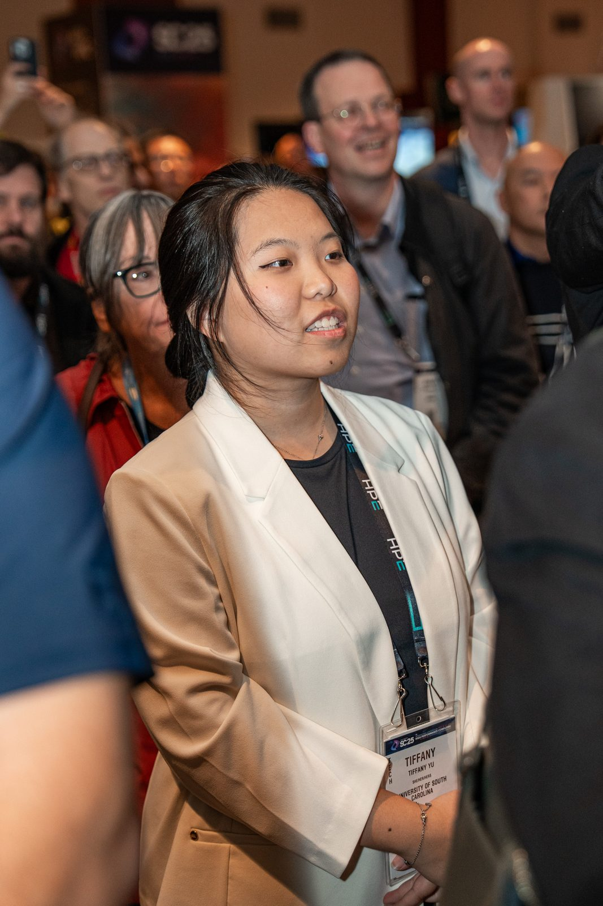

TiffanyYu.
This ePortfolio traces how curiosity, hands-on experience, and adaptable communication turned classroom learning into research, and research into leadership.

Hi, I'm Tiffany.
Hi! My name is Tiffany Yu, and I am a first-generation college student at the University of South Carolina, majoring in Computer Engineering with a concentration in Artificial Intelligence and minoring in Spanish. I am pursuing Graduation with Leadership Distinction in Research. I am interested in robotics, artificial intelligence, and making computer systems more efficient. Through undergraduate research and my role as a UNIV 101 Peer Leader, I have grown more confident in solving unfamiliar problems, asking questions, and supporting others.
I created this ePortfolio to reflect on how my classroom learning and experiences beyond the classroom have shaped that growth. My three key insights explore the importance of curiosity in research, learning through hands-on experience, and adapting communication to meet different people’s needs. My leadership proposal brings these lessons together through a plan to make academic support more approachable and accessible. As I prepare to pursue a master’s degree, I hope to continue growing as a researcher and help other students feel comfortable learning and asking for help.
Concentration in Artificial Intelligence
Minor in Spanish
University of South Carolina · Expected Dec 2026
Three insights. One plan to lead.
Each Key Insight connects a within-the-classroom (WTC) experience, a beyond-the-classroom (BTC) experience, and a concept or framework, supported by artifacts. The Leadership section applies those lessons to a real problem. The Research page collects my posters, publications, and resume.
Research Is About Curiosity
Why not knowing is where research begins, from CSCE 585 to the Supercomputing 2025 Conference.
Hands-On Experience Builds Skills
How CSCE 201 and AutoSlim research turned knowledge into real skills.
Meeting People Where They Are
What EDLP 520, peer leadership, and research groups taught me about communication.
A TA-Supported Course Resource Hub
A plan to make academic help feel approachable for every kind of learner.
Snapshots from my journey
From my first week at Carolina to presenting research at an international conference.